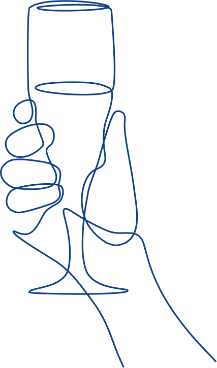

De bruine kroeg als erfgoed

De bruine kroeg maakt deel uit van de geschiedenis van Nederlandse steden en dorpen. Dat verleden is terug te vinden in het gebouw en het interieur, maar ook in de manier waarop het café wordt gebruikt. De inrichting, de kastelein, de bezoekers en de plaatselijke gewoonten vormen samen de cultuur van de bruine kroeg.
Een interieur met geschiedenis
Een café-interieur ontstaat vaak in de loop van vele jaren. Een houten bar, lambriseringen, glas-in-lood, een tegelvloer of een ingebouwde kast kunnen iets vertellen over de geschiedenis van de zaak. Ook losse voorwerpen, zoals tafels, stoelen, foto's en een biljart, dragen daaraan bij. Juist de samenhang tussen de ruimte, de inrichting en het gebruik maakt zo'n interieur cultuurhistorisch waardevol.
Behoud vraagt daarom aandacht voor het geheel. Bij een verbouwing kunnen onderdelen verdwijnen die afzonderlijk alledaags lijken, maar samen de geschiedenis van het café zichtbaar maken.
Een levende sociale traditie
De erfgoedwaarde zit ook in het dagelijkse caféleven: gesprekken aan de bar, een vaste kaartavond, biljarten, samen zingen of plaatselijke verenigingen die er bijeenkomen. De kastelein en de vaste bezoekers geven zulke gebruiken door. Daarmee vervult het café een ontmoetingsfunctie in de buurt of het dorp.
Dit is de immateriële kant van het erfgoed. Het gaat om kennis, gewoonten en sociale praktijken die mensen met elkaar delen en voortzetten. Die tradities kunnen veranderen wanneer nieuwe uitbaters en bezoekers ze overnemen.
Landelijke erkenning
Op 13 maart 2026 werd in het televisieprogramma Café Kockelmann bekendgemaakt dat de traditionele Nederlandse bruine kroeg wordt opgenomen in de Inventaris Immaterieel Erfgoed Nederland. Het Kenniscentrum Immaterieel Erfgoed Nederland (KIEN) coördineert deze inventaris en noemt de bruine kroeg in zijn overzicht van erfgoed dat een plaats krijgt op de lijst.
Deze erkenning betreft de levende cafétraditie: de sociale functie, de vaste bezoekers, de gebruiken en het doorgeven daarvan. De kroeg als tweede huiskamer staat daarbij centraal. Het gaat om de cultuur rond het café, niet om een automatische beschermde status voor ieder afzonderlijk pand.
Ook lokaal wordt de betekenis van cafés erkend. Museum Rotterdam en Stichting Wijkcollectie benoemden tien bruine kroegen tot ‘Echt Rotterdams Erfgoed’. Daaronder zijn Café Kleiweg en Café Charlois. Deze erkenning benadrukt hun betekenis voor de stad en haar bewoners.
Politieke steun voor behoud
De Amsterdamse gemeenteraad nam in 2023 unaniem een initiatiefvoorstel van Lian Heinhuis (PvdA) aan om de bruine kroeg beter te beschermen. Het voorstel vroeg onder meer om een inventarisatie van bijzondere cafés, aandacht voor historische interieurs en een traject voor erkenning als immaterieel erfgoed. Ook in andere steden, waaronder Rotterdam, Tilburg en Groningen, kwam het behoud van bruine kroegen op de politieke agenda.
Erfgoedwaarde en bescherming
Culturele waarde en een beschermde monumentenstatus zijn niet hetzelfde. Bij een beschermd monument kan de bescherming ook vaste interieuronderdelen omvatten, zoals lambriseringen, tegelwerk en ingebouwde meubels. Losse tafels, stoelen en andere roerende voorwerpen vallen in het algemeen niet onder die monumentenbescherming.
De nationale inventaris maakt de traditie zichtbaar en ondersteunt de betrokken gemeenschap bij het doorgeven ervan. Een vermelding geeft een cafégebouw niet automatisch een monumentenstatus en biedt op zichzelf geen garantie tegen sluiting. Ook de huur en de bedrijfskosten veranderen er niet door. Voor het voortbestaan blijven haalbare exploitatie, bedrijfsopvolging en aandacht van gemeenten, eigenaren en bezoekers van belang.
Nationale inventaris en UNESCO
De Nederlandse inventaris en de internationale UNESCO-lijst zijn verschillende lijsten. Een plek op de nationale inventaris is geen internationale UNESCO-status. In het Amsterdamse initiatiefvoorstel werd ook om een traject richting UNESCO gevraagd. Voor internationale opname is een afzonderlijke voordracht nodig: de minister van Onderwijs, Cultuur en Wetenschap kan erfgoed namens Nederland nomineren, waarna het internationale UNESCO-comité daarover beslist.
Vastleggen en doorgeven
Stichting De Bruine Kroeg zet zich in voor bescherming en behoud van traditionele bruine cafés. Op dit platform leggen we cafés vast met hun locatie, geschiedenis en, waar beschikbaar, foto's. Zo maken we zichtbaar welke plekken er zijn en wat hun achtergrond is. Het behoud van dit erfgoed gaat over de historische inrichting én over het voortbestaan van het café als ontmoetingsplek.
Bronnen en verder lezen
- Rijksdienst voor het Cultureel Erfgoed — Interieurensembles
- Rijksdienst voor het Cultureel Erfgoed — Interieurs en bescherming
- Kenniscentrum Immaterieel Erfgoed Nederland — Erfgoed op weg naar de Inventaris
- UNESCO Nederland — Immaterieel erfgoed en de nationale inventaris
- Museum Rotterdam — Tien bruine kroegen als Echt Rotterdams Erfgoed
- WNL — Aankondiging van de landelijke erkenning, 13 maart 2026
- Misset Horeca — Het Amsterdamse initiatiefvoorstel uit 2023
- Rijksoverheid — Beantwoording Kamervragen over bescherming van immaterieel erfgoed, 12 januari 2026
Bronnen geraadpleegd op 26 oktober 2026.